Probabilidad Total y Regla de Bayes
Si revisamos de nuevo el ejemplo del carpintero y los tornillos podemos notar como característica importante en ese experimento que está constituido de dos estados: Primero se debe elegir una caja y una vez hecho esto se debe sacar un tornillo de la misma. Hay algunas preguntas que plantearse respecto a este experimento que podrían resultar diferentes a lo que hemos explorado hasta ahora.
Por ejemplo ¿Cuál es la probabilidad S de sacar un tornillo de 20 mm.? Si se sacó un tornillo de 20 mm., ¿cuál es la probabilidad de que se haya escogido de la caja azul?
El esquema para abordar este par de preguntas nos permitirán iniciar el estudio de los temas probabilidad total y Teorema de Bayes, que son los últimos temas de este capítulo.
Para resolver el primero de los dos problemas propuestos es importante tener
en cuenta que hay dos alternativas para obtener un tornillo de 20 mm. A saber
elegir en el primer estado la caja azul y sacar un tornillo de 20 mm o bien
elegir en el primer estado la caja roja y sacar un tornillo de 20 mm. Si M
es el evento toma el tornillo de la caja azul y N toma el tornillo de la
caja roja. Y S es el tornillo es de 20 mm se tiene
| P[S] | = | P[(M |
|
| = | P[M |
||
| = | P[M]P[S |
||
| = | 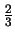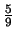 + 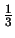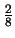 | ||
| = |
Para resolver este tipo de problemas necesitamos establecer algunas definiciones y resultados importantes.
Si A1, A2,..., An son eventos tales que:
-
Ai
 Aj =
Aj =  siempre que i 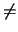
j.
siempre que i 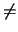
j. - P[Ai] > 0, i = 1, 2,..., n.
-
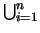Ai
=
 .
.
Cuando un experimento consiste de la realización de dos etapas y es tal que
la primera puede descomponerse en
A1, A2,..., An eventos,
entonces la ocurrencia de cualquier evento B en la segunda etapa sólo
puede darse en forma conjunta con alguno de los eventos de la primera etapa. Es
decir el evento B se descompone en la forma
B = (B  A1)
A1)  (B
(B  A2)
A2)  ...(B
...(B  An). Si se tiene además que
A1, A2,..., An forman una
partición del espacio muestral en la primera etapa entonces los eventos en la
descomposición anterior son independientes y obtenemos el siguiente teorema:
An). Si se tiene además que
A1, A2,..., An forman una
partición del espacio muestral en la primera etapa entonces los eventos en la
descomposición anterior son independientes y obtenemos el siguiente teorema:
| P[B] | = | P[(B |
|
| = | P[B |
||
| = | P[A1]P[B |
||
| = | 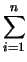P[Ai]P[B
|
El segundo de los problemas planteados se resuelve haciendo uso de probabilidades condicionales, interesa conocer la probabilidad condicional siguiente:
Si el resultado final de la elección es un tornillo de 20 mm., ¿cuál es la probabilidad de que se haya extraído de la caja azul?
Utilizando la representación de eventos del primer ejemplo y utilizando la fórmula
1.7 y el teorema 3
obtenemos:
| P[M |
= | 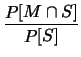 | |
| = | 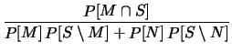 | ||
| = | 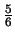. |
Este tipo de deducciones propias de experimentos con dos estados y que implica el cálculo de la probabilidad de que ocurra algún conjunto de condiciones o circunstancias del primer estado dado que ocurre un evento del segundo estado se resuelven recurriendo al siguiente teorema, conocido como fórmula de Bayes:
Ejemplo 7
Una caja A contiene tres bolas blancas y cuatro negras. Otra caja, B, contiene dos bolas blancas y tres negras. Se extraen bolas, una a una, en forma aleatoria y sin reemplazo.
- Si las dos bolas son elegidas de A, ¿cuál es la probabilidad de
que ambas sean negras?
- Si se eligen dos bolas, una de cada caja, ¿cuál es la probabilidad de
que no sean del mismo color?
- Si se elige una caja al azar y se extraen dos bolas al azar, ¿cuál es la
probabilidad de que sean del mismo color?
- Si se elige una de las cajas al azar se extraen dos bolas y son de colores distintos, ¿cuál es la probabilidad de que se hayan extraído de la caja B?
Solución
- Si se saca la primer bola de la caja A y la segunda de la misma
caja la probabilidad de que ambas sean negras es:
 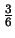.
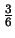.
- Una manera de hacerlo es por complemento, extraer dos bolas de distinto
color es el complemento de extraerlas del mismo color. La probabilidad de
extraerlas del mismo color es sacar la primera negra y la segunda negra o la
primera blanca y la segunda blanca, por lo tanto la probabilidad pedida es:
1 -
 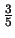
+
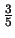
+  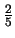
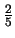 .
.
- El evento se descompone en elegir la caja A y extraer dos blancas o
dos negras o bien elegir caja B y extraer dos blancas o dos negras.
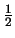  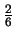
+
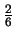
+  +
+ 
 + 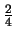
+ 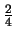
= = 
 + 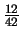
+ 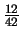 + 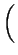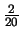
+ 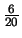
+ 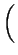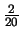
+ 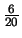 =
= 
.
- La probabilidad C de extraer las dos bolas de igual color esta
calculada para el caso anterior.
P[B  C]
C]= 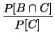 = 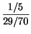 = 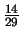.
El primero de ellos se llama la sensibilidad, que es la probabilidad de que una persona que este enferma de positivo en el test.
El otro valor se llama especificidad y es la probabilidad de que una persona no enferma tenga un diagnóstico correcto.
Lo normal es que ambos valores sean muy cercanos a la unidad.
Conociendo la incidencia de la enfermedad, sobre alguna población, se puede
calcular la probabilidad de que una persona que haya dado positivo en el diagnóstico
no sufra de la enfermedad. Si se sabe que en la población la probabilidad de
que una persona elegida al azar este enferma es 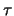
entonces usando las fórmulas de Bayes se tiene
| P[NoEstaEnfermo |
= | 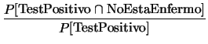 | |
| = | 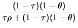. |
Por ejemplo, [2], existe un test llamado
ELISA que se utiliza para verificar sangre donada en una problación en la cual
la probabilidad de que un individuo tenga los anticuerpos de SIDA es de 0.0001.
Suponga que este test tiene una sensibilidad
 = 0.977 y una especificidad
= 0.977 y una especificidad
 = 0.926.
= 0.926.
Por ejemplo la probabilidad de que una muestra que contenga los anticuerpos de un diagnóstico de que sí tiene los anticuerpos es:
Este test resulta deficiente, de hecho clasifica como positivos muchos casos que no tienen los anticuerpos.